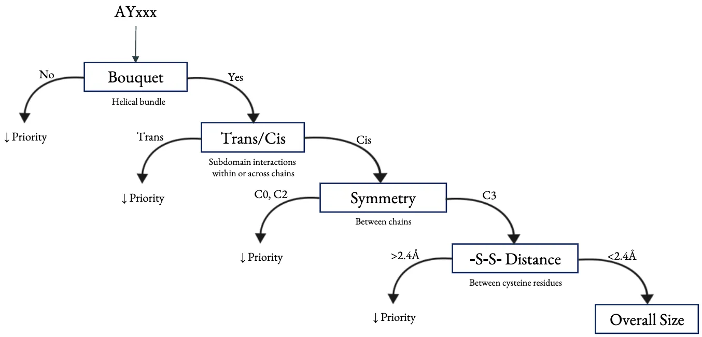
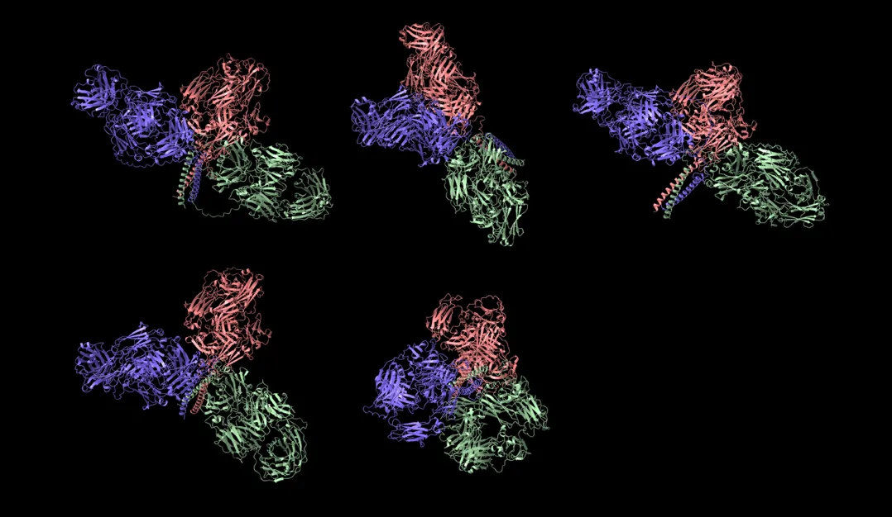
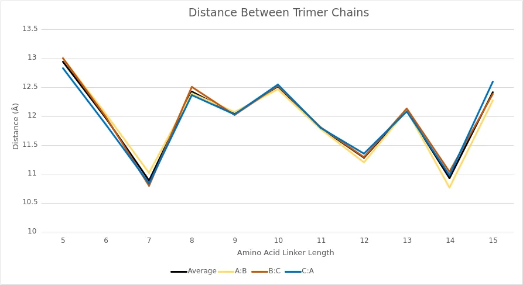

Computational Biology Intern, Protein Engineering Group, AB Biosciences · Summer 2026
Triaging AlphaFold3 Predictions for Therapeutic Fc-Fusion Proteins
I built a four-step triage framework that ranks AlphaFold3 predictions of trimerized Fc-fusion designs, so protein engineers can pick candidates before booking bench time.
The problem
AB Biosciences engineers therapeutic fusion proteins. My project covered homotrimeric Fc-fusions: an antibody Fc fused to a trimerization module so that three identical chains assemble into one molecule with three binding interfaces instead of one.
Gluing domains together that never shared a chain can go wrong in many ways: steric clashes, failed trimerization, broken folds. Testing every candidate at the bench is slow and expensive, so the question was whether AlphaFold3 could act as a pre-filter.
What I did
Run AlphaFold3 safely and flexibly
The group works on an air-gapped Ubuntu workstation to protect IP, with local databases. I documented three ways to run AlphaFold3 (interactive, a CSV-driven batch queue, and hand-built JSON for heteromers and protein/DNA/RNA/ligand complexes) and validated them on seven test inputs, from a monomer to a protein-RNA-ligand complex. Getting there meant working through an outdated Python, then Docker, then a FASTA-only CLI, before settling on the local setup.
Screen linkers systematically
More than 100 structures across about 78 design variants. Scanning linker length from 0 to 15 residues in single steps showed that 4 to 5 residues collided sterically, 14 to 15 interfered with the Ig fold, and about 7 worked best. Placing a matrilin-derived trimerization module at the C-terminus produced a helical bundle far more reliably than the N-terminus, and a serine scan through a 7-residue glycine/serine linker favored the canonical spacing.
Shrink the construct
A designed cysteine mutation made the light chain and CH1 domain unnecessary, giving a construct about 33% smaller while keeping the fold.
Turn judgment into a decision tree
With my supervisor I wrote down how we were actually deciding, then tested it on new designs until it held. The result is a four-step filter: is there a helical bundle, are the interactions cis or trans, is the symmetry C3, and are the cysteine pairs close enough for a disulfide (under 2.4 Å)? Passing designs are then ranked by overall size.
Automate the tedious parts
A Python parser pulls pLDDT, inter-chain PAE and ranking-score components from AlphaFold3 confidence files, and a ChimeraX script scans every cysteine pair for disulfide-range distances. I also benchmarked AlphaFold3 against ESMFold2 on the same seven inputs; ESMFold2 handles only protein chains, which is why AlphaFold3 stayed primary.
Write it down so it outlives me
User guide for the three run methods, the input schema, the confidence metrics and a ChimeraX quick reference, plus a sequence ID record and a data workbook, handed to the group.
Results



What I learned and what I would do differently
- My supervisor's feedback that changed how I present results: state the question, show the data, then give the conclusion. By the end of the summer I was walking him through the AlphaFold3 workflow.
- Triage criteria are hypotheses too. Ours changed over several rounds as predictions came back, and the final tree is the version that survived.
- AlphaFold3 ranks designs; it does not replace the bench. The value is spending wet-lab time on better candidates.
Tools
Links
A reusable triage framework and a documented set of linker rules turned a pile of AlphaFold3 outputs into a ranked shortlist a bench scientist can act on.